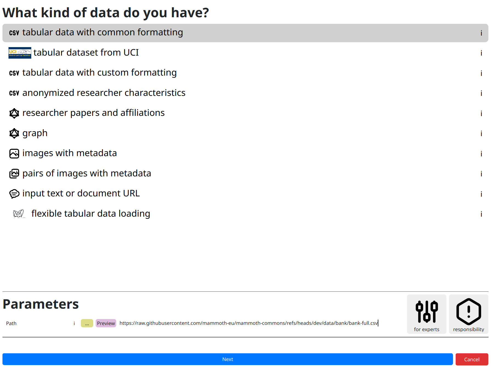
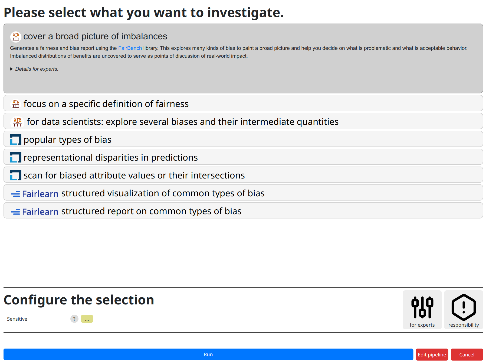
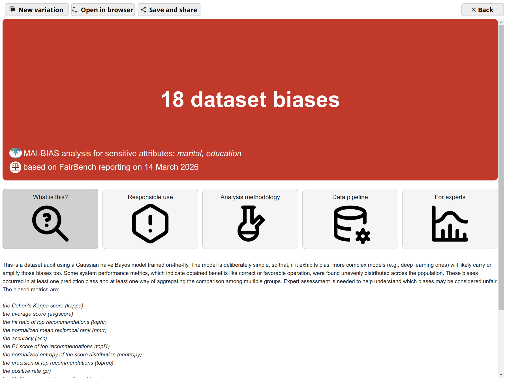

Requirements
This tutorial assumes that you have the MAI-BIAS toolkit already installed and a dataset available. Find installation instructions here, and we will use files from the bank dataset from our integration test data here. You can use any other url or -if you are running the local runner- local file too. Everything shown below is for the local runner.
Hello!
Open the MAI-BIAS toolkit. The local runner starts from a place where all past results are shown like below. If this is your first time, you will only see the large button at the top. Click that button to start a new analysis. Or click on one of the past analyses to view it, or on the+ button to rerun something (with potentially altered parameters).
 Click count: 1
Click count: 1
Dataset
Starting a new analysis moves you to a dataset loading screen. You need to first tell the toolkit
what kind of data you are loading, as each may require different protocols. Click on the
kind of data you have, though in our case tabular data with common formatting that
we will use is preselected. At the bottom of this page, you need to input various parameters
related to your data, such as which exact file the dataset is stored in.
In more complicated datasets, more options are required. For example, in computer vision it is
convenient to store shared images in one folder but accompanying metadata somewhere else. Experts
can usually find more loading options
under the for experts button. AFind more information about available options and parameters
through all ! buttons, and get some non-technical insights about responsibly creating fair
AI through the responsibility button.
For now, though, just click on the dataset path, which is the only information mandated by our selected dataset loader, and paste the following online path:
https://raw.githubusercontent.com/mammoth-eu/mammoth-commons/refs/heads/dev/data/bank/bank-full.csvYou can also use other URLs or use the yellow
... button to browse through your file system.
Once you input your dataset click next.

Click count: 4 (actually 3 but let us not cheat with the preselected options)Model
Moving to next steps shows a progress bar about loading and -the first time you run each module- installation of missing software. You will be notified about issues like missing files (in which case you can fix them and try again), but if everything is alright the toolkit moves to the next screen for selecting an AI model.
Similarly to before, we need to click on the kind of model we are analyzing. Options like the preselected default can help analyze plain datasets by indicating that you have no models, or by leveraging well-understood models.
Click next to continue.
 Click count: 6
Click count: 6
Analysis
Finally, click on the kind of analysis you want to conduct. Available options depend on the model and dataset types you have selected. Analyzing the bias of a dataset alone is tougher than that of a dataset plus model (where you can check for imbalances) so the options are more limited here.
Like previously, there may be options for experts that help heavily customize
the analysis. Looking at those is important at this juncture to avoid fairness washing with
deceptively positive assessments. Most modules err on the side of strictness for common cases,
but default parameters can in no way account for every situation.
A parameter that always appears is designating sensitive attributes from your dataset.
Often, including now, you can click on ... and then click on attributes
you want to analyze. Or you could write them by hand as a comma-separated list.
Contrary to many frameworks, you can select multiple attributes, and many modules account for
their intersectionality too. You may also have numerical sensitive attributes, though a few modules
will complain about them. But not this one. Finally,
consider another click on run to perform the analysis.

Click count: 10Results
That's it! You are now seeing the outcomes of fairness analysis. This starts with a short phrase that is summary judgment of whether -or how many- biases have been found. This is presented alongside some information about the sensitive attributes analyzed, as well as the date and the main technologies involved in the analysis itself.
Underneath, you can find various tabs that contain more details, and are suited for different kinds of users.
Use the save and share button on top to export the analysis outcome as a
file. That can be shared with others to open in their browser.
